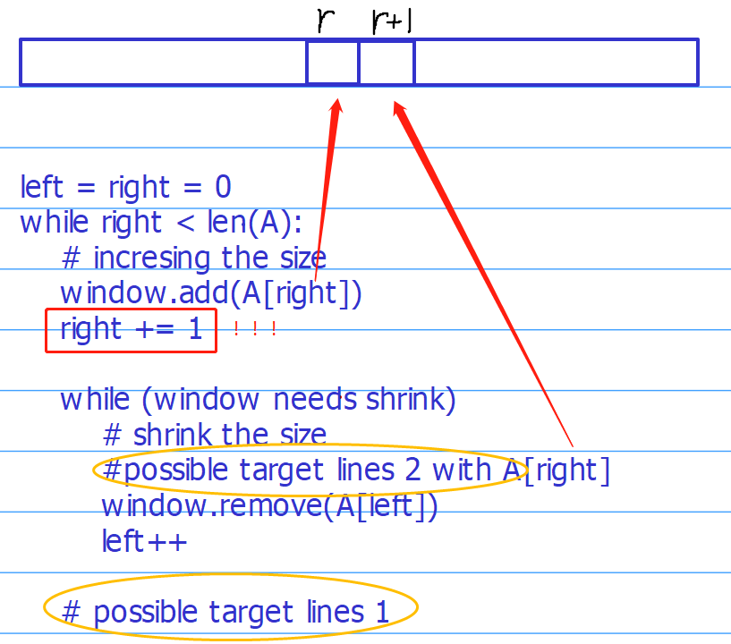
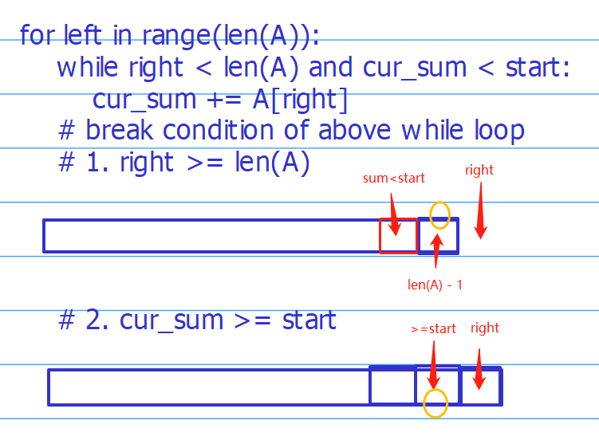
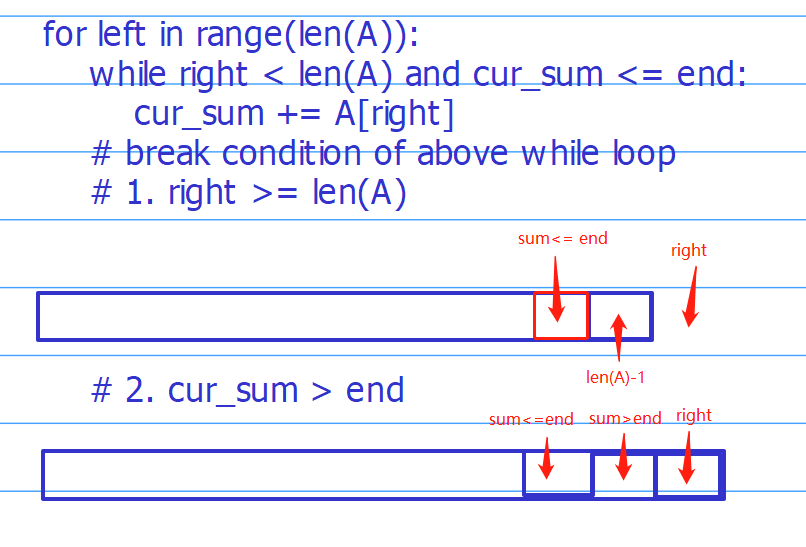

Templates
Here we present a first template for sliding window problem.
1 | def sliding_window(A, window): |
The sliding window technique can be used to some two pointer problems, which makes it easy to write the code.
However, when dealing with complex sliding window problem, we might need to move left pointers in the outer loop rather the right pointers in the outer loop. We therefore have the the following template.
1 | def sliding_window(A, window, start): |
Common mistake
- The common mistake that I usually make in the first template is that, since I fix where to increment the index right, when going to the while loop for shrinking the size of the window, the index right should point to right+1. In this case, if we would like to use right, it has already been changed and is not the original one, especially when referring to the array index by watching out if we really want to looking at nums[right] or nums[right+1].

- The next point is that we should be careful with the left index in the second while loop
- To reasonably design where to compute the objective. As it shown in the figure, there might be two options to choose to put the object lines.
- To correctly use the second template, we need to be careful of the condition in the inner loop. Taking the question (Subarray Sum II) for example.
- We first consider to compute the minimal length for the subarray sum greater than or equal to the start value. This shows that if both cases are feasible (subarray sum >= start), the correct index is right - 1.

Then, we consider the end side.
Consider Case 1: right >= len(A)
If cur_sum <= end, the feasible index can be right-1.
If cur_sum > end, the feasible index can be right-2.
Consider Case 2: cur_sum > end
- The feasible index can only be right-2

Combining those two cases, we have the following code.
1 | def subarraySumII(self, A, start, end): |
Of course, we can use some metric to optimize the logic but need to be careful enough.
1 | def subarraySumII(self, A, start, end): |
Or the following code.
def subarraySumII(self, A, start, end):
1 | def subarraySumII(self, A, start, end): |